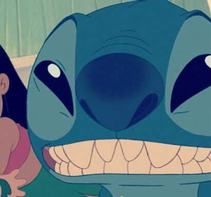
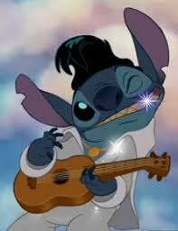
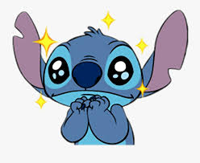
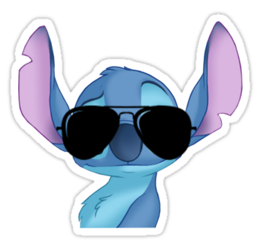

Who is Stitch?
DID YOU JUST ASK THAT QUESTION?! Stitch or also known as Experment 626 (Pronounced as six two six, not six hundred twenty six), is an illegally made, genetically modifidied extra terristrial lifeform created by Dr. Jumba Jookiba to create chaos throughout the galaxy. He was captured by the United Galaxtic Federation and given life sentence on a desert asteroid and on his transport he brakes free and escapes into the a shuttle and lands in Hawaii on Earth where he meets Lilo where he is taken in as her dog and the two develops a amazing family bond.
What makes Stitch so enjoyable?
Everything, like first he's blue which is a great color. he also looks like a cross between a koala bear and a rabbit that can grow and retract a second set of arms and two antennas which is indisputably the best character design ever. He is extremely mischievous and charming and his character development as well as his relationship with Lilo is so great.
Where do you find Stitch?

Where do yo-.... On THE FLIPPING MOVIE LILO & STITCH OR LILO & STITCH 2: STITCH HAS A GLITCH, OR THE ANIMATED SERIES OF LILO & STITCH! All of which are really good and I do recommend them.
When do I watch Lilo and Stitch?
NOW! RIGHT NOW! GET OFF THIS SITE GO ONTO DISNEY PLUS AND WATCH LILO & STITCH, LILO & STITCH 2: STITCH HAS A GLITCH AND THE LILO & STITCH ANIMATED SERIES AS WELL YOU DINGUS! Or when you have free time at least.
How Good can Lilo and Stitch be?
Really good, but if you don't believe me, just find out for yourself.